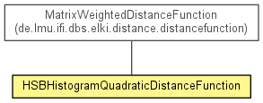

de.lmu.ifi.dbs.elki.distance.distancefunction.colorhistogram
Class HSBHistogramQuadraticDistanceFunction
java.lang.Object
 de.lmu.ifi.dbs.elki.distance.distancefunction.AbstractPrimitiveDistanceFunction<NumberVector<?,?>,DoubleDistance>
de.lmu.ifi.dbs.elki.distance.distancefunction.AbstractVectorDoubleDistanceFunction
de.lmu.ifi.dbs.elki.distance.distancefunction.WeightedDistanceFunction
de.lmu.ifi.dbs.elki.distance.distancefunction.colorhistogram.HSBHistogramQuadraticDistanceFunction
de.lmu.ifi.dbs.elki.distance.distancefunction.AbstractPrimitiveDistanceFunction<NumberVector<?,?>,DoubleDistance>
de.lmu.ifi.dbs.elki.distance.distancefunction.AbstractVectorDoubleDistanceFunction
de.lmu.ifi.dbs.elki.distance.distancefunction.WeightedDistanceFunction
de.lmu.ifi.dbs.elki.distance.distancefunction.colorhistogram.HSBHistogramQuadraticDistanceFunction
- All Implemented Interfaces:
- DistanceFunction<NumberVector<?,?>,DoubleDistance>, PrimitiveDistanceFunction<NumberVector<?,?>,DoubleDistance>, PrimitiveDoubleDistanceFunction<NumberVector<?,?>>, InspectionUtilFrequentlyScanned, Parameterizable
@Reference(authors="J. R. Smith, S. F. Chang",
title="VisualSEEk: a fully automated content-based image query system",
booktitle="Proceedings of the fourth ACM international conference on Multimedia 1997",
url="http://dx.doi.org/10.1145/244130.244151")
public class HSBHistogramQuadraticDistanceFunction- extends WeightedDistanceFunction

Distance function for HSB color histograms based on a quadratic form and
color similarity.
The matrix is filled according to:
VisualSEEk: a fully automated content-based image query system
Smith, J.R. and Chang, S.F.
Proceedings of the fourth ACM international conference on Multimedia 1997
|
Field Summary |
static OptionID |
BPP_ID
Parameter for the kernel dimensionality. |
BPP_ID
public static final OptionID BPP_ID
- Parameter for the kernel dimensionality.
HSBHistogramQuadraticDistanceFunction
public HSBHistogramQuadraticDistanceFunction(int quanth,
int quants,
int quantb)
- Constructor.
- Parameters:
quanth - Hue binsquants - Saturation binsquantb - Brightness bins
computeWeightMatrix
public static Matrix computeWeightMatrix(int quanth,
int quants,
int quantb)
- Compute the weight matrix for HSB similarity.
- Parameters:
quanth - H binsquants - S binsquantb - B bins
- Returns:
- Weight matrix
equals
public boolean equals(Object obj)
- Overrides:
equals in class Object